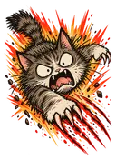

第 3 项：横幅 banner.webp —— 预期：横向横幅
../../assets/art/banner.webp

在夸克里打开本页：先看顶部结果面板，再看下面 5 项能不能正常显示。页面不依赖任何游戏脚本。
../../assets/cards/icon/attack.webp

../../assets/cards/icon/attack.webp（loading="lazy"）
../../assets/art/banner.webp
background-image: url("../../assets/cards/frame.webp")
../../assets/cats/cat-01.webp